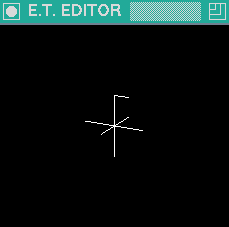
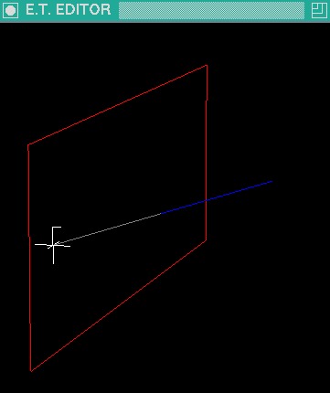
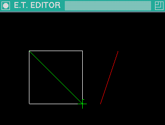
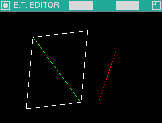
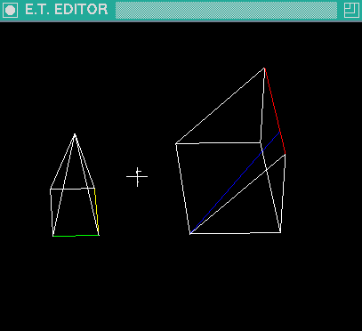
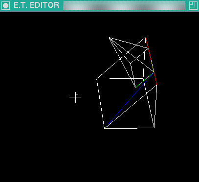
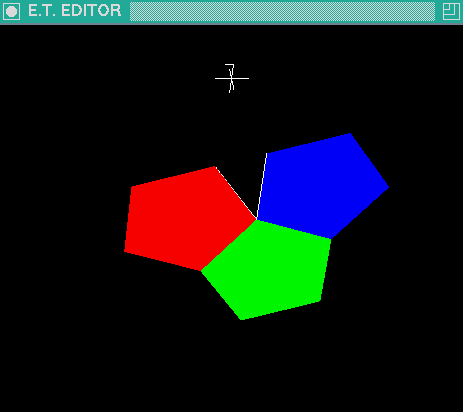
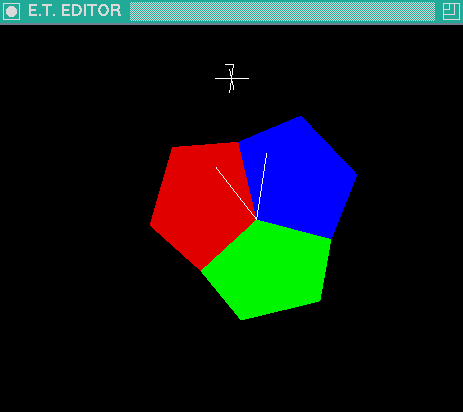
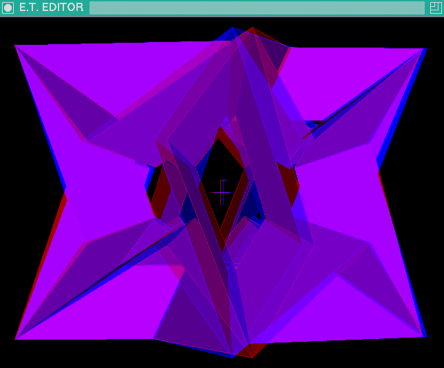

E.T. EDITOR: EDGE TRIANGLE THREE-DIMENSIONAL EDITOR

Copyright (C) 2003,2013 Marcin Kik mki1967@gmail.com
E.T. EDITOR comes with ABSOLUTELY NO WARRANTY.
This is free software, and you are welcome to redistribute it
under conditions of
GNU GENERAL PUBLIC LICENSE
Send any comments or suggestions to:
mki1967@gmail.com
Most recent versions are available at:
https://github.com/mki1967
See the NEWS file for the recent
modifications of the program.
INSTALLING:
The program requires X11 with GL/GLX libraries.
DESCRIPTION OF THE PROGRAM:
E.T. EDITOR is a graphical editor for designing 3-dimensional
graph consisting of colored edges and triangles.
The main intention is to make the modeling process as direct
as possible without additional hardware required
for stereoscopic vision.
It can be used for many useful purposes
(e.g. designing 3D scenes in computer games).
The graph is represented by following objects:
- Array of VERTICES
- each vertex is placed in a point of 3D space.
- Array of colored EDGES
- each edge is represented by line segment between
its incident vertices.
- Array of colored TRIANGLES
- a triangle is analogue of an edge but
connects three vertices.
The remaining objects of the editor are:
- CURSOR:
- indicates position in 3D space and current color.
Its orientation in the scene is fixed.
The shape of the cursor is asymmetrical to help you find
your orientation in the scene.
- OBSERVER:
- represents your position and orientation in 3D space
- SCREEN:
- represents the view-port (zoom, resolution, etc)
- CONTEXT:
- modifies the meaning of some pressed keys
- GROUPS:
- each vertex belongs to a single group
(denoted by an integer).
Some actions can be performed on the groups of vertices.
You can manipulate these objects by invoking editing actions.
Most of the actions are invoked by pressing the key while the input focus is
on the graphical window.
Sometimes you have to input a value in the terminal in
which the program is started.
Also some actions are invoked by selecting an item
from text menu in the terminal.
Therefore you should run the program in terminal as a foreground process.
USAGE:
In the directory containing the compiled program type:
./et-edit [filename.et]
You should have downloaded some example data:
the files with extension '.et'.
(Warning: Keyboard CapsLock must be off.)
USER ACTIONS:
- ROTATING THE SCENE:
< Arrow keys> /< Home> /< End>
-
You may reset the orientation by pressing < R> key.
The observer is moved to a position from which it can see the cursor
in the center of the screen.
- MOVING THE SCENE:
< Shift> +< Arrow keys> /< Home> /< End>
-
In F2 mode (i.e. after pressing the < F2> key)
you may increase/decrease the moving step.
- MOVING THE CURSOR:
< Ctrl> +< Arrow keys> /< Home> /< End>
-
The cursor is moved by the "cursor step" in one
of the six directions X+, Y+, Z+, X-, Y-, Z-.
The selected direction depends on the orientation of the scene
to the observer.
Whenever you move the cursor, its current (X,Y,Z) position is printed
in the terminal.
< Ctrl> +< F> brings the cursor to the grid point
(i.e. the vector (x,y,z)*cursor_step, where x,y,z are integers)
close to the center of the screen.
In F2 mode (i.e. after pressing the < F2> key)
you may increase/decrease the cursor step.
You can also change the cursor parameters from text menu.
- FINDING A VERTEX:
< f>
-
This operation moves the cursor to the nearest vertex.
- INSERTING NEW EDGE:
-
To insert new edge you have to insert two endpoint vertices.
Pressing < Enter> or < e> in default context inserts
a marker vertex in the cursor position and switches the context to et0.
Note that in the context et0 the line between the marker and the
cursor is drawn.
Pressing < Enter> or < e> in context et0 inserts a new edge with two
endpoints in positions of the marker and the cursor.
- INSERTING NEW TRIANGLE:
-
Pressing < Enter> or < e> or < t> in default context inserts
a marker vertex in the cursor position and switches the context to et0.
Pressing < t> in context et0 inserts the second marker
and switches the context to t1 (if the cursor is at position different from the
first marker).
In context t1 the triangle is drawn between the two markers and the cursor.
Pressing < Enter> or < t> in context t1 inserts a new triangle with
endpoints in positions of the markers and the cursor.
- CANCELING OPERATION:
< Esc>
-
This switches the context to default context.
- DELETING EDGES:
-
To delete a single edge place the cursor in the first endpoint
of the edge, press < e> to switch the context to et0 and
to mark the endpoint, then move the cursor to
the second endpoint of the edge and press < Backspace> .
To delete all edges incident to a vertex,
place the cursor at the vertex and press < Ctrl> +< Alt> +< x>
- DELETING TRIANGLES:
-
Deleting a single triangle is similar to deleting an edge:
You start like inserting the triangle, but you finish it
with < Backspace> .
To delete all triangles incident to a vertex,
place the cursor at the vertex and press < Ctrl> +< Alt> +< Shift> +< x>
- CHANGING CURRENT COLOR:
< c>
-
the color is changed cyclically
- CHANGING BACKGROUND COLOR: < b>
-
-
SETTING THE LIGHT DIRECTION:
< L>
-
The brightness of each triangle depends on its
orientation to the light direction.
Press < L> to set the light direction perpendicular to the screen
(i.e. in the direction of your view).
Note that there are two modes:
- one light mode
- two opposite lights mode
You can switch between the modes with < Shift> +< L> .
The default is the second one: You have
two second light source in opposite direction
to the main light.
However, when you export to Povray,
only the main light source is exported.
- SAVING TO A FILE: < Ctrl> +< s>
-
You have to input in the terminal the filename
or "-" to leave the filename unchanged.
- LOADING: < Ctrl> +< l>
-
You have to input in the terminal the filename
or "-" to leave the filename unchanged.
- MERGING: < Ctrl> +< Shift> +< l>
-
This adds the vertices, edges and triangles from the file
to current graph.
The group numbers of the merged object are increased
to be not mixed with existing groups.
- CLIPPING THE REGION:
-
You can clip of some fragments of the scene, that
are obscuring the area you are working on.
The < Ctrl> +< Shift> +< Arrow key> /< Home> /< End> acts as
the ON/OFF switch for clipping in given direction.
The clipping plane is placed at the cursor
and is parallel to two of the X,Y,Z axis.
To switch off all the clipping planes press < Ctrl> +< Shift> +< R> .
- INVOKING TEXT MENU:
-
Pressing the key < M> invokes the main menu in the
text terminal.
The menu items are printed in separate lines.
You select the item by inputing the string
printed on the left side of each item.
- UNDO: < U>
-
You can undo only the last step that
modified the structure of the graph or the groups.
The graph structure,
groups, background and current color, cursor position,
context and the observer position are restored to the
situation just before the last modifying action.
- INSERTING REGULAR POLYGON:
-
You may insert a filled or not filled regular polygon
composed of triangles, of edges or of edges with triangles
(< Shift >+< O>, < Alt>+< O>
or < Shift >+< Alt>+< O> ).
All vertices of the new polygon are placed in new group.
CURRENT GROUP is set to this new group.
Colors are equal to the current color.
To increase/decrease the number of polygon vertices
press < PageUp >/ < PageDown >.
- STATISTICS: < => (key: EQUAL)
-
The statistics about edited object are printed
in the terminal:
number of vertices, groups, edges, triangles,
and the range of the object
(i.e. the minimal and maximal coordinates of vertices).
- EXPORTING TO
POVRAY:
-
You can export a sequence of views of your scene to Povray
scene description files,
and then render them with the Povray program.
(To render the exported scene call:
povray < filename> .ini
where < filename> .ini and < filename> .pov are
the exported files - see the description below.)
The first scene should be exported by invoking the
MAIN MENU in text terminal (< M> ) and then selecting
the Export ("4") to start EXPORT MENU and then selecting
Povray ("pov") to start POVRAY EXPORT MENU.
The subsequent exports can be done by pressing
< Ctrl> +< Shift> +< S> from graphical window.
In the POVRAY EXPORT MENU you can set the following parameters:
- file name prefix
- counter
-
(Each exported file's name is a concatenation of the file name prefix
and a counter. The counter is increased automatically
after each export. Thus you can prepare enumerated sequence of
scenes for rendering.)
- edge radius
-
(Each edge is exported as a cylinder.
The radius of the cylinder should be rather small positive value.
If you input the radius less or equal to zero, the
edges are not exported.)
- ambient
- diffuse
-
These two parameters decide how large is
the contrast between the shadowed and illuminated areas.
- light distance
-
The distance of the light from the center of coordinate system.
The very large value makes the light rays in the observed
scene be almost parallel.
The direction of the light is the same as in the editor.
To export the current view from POVRAY EXPORT MENU
you select Export ("e").
Note that two files are created:
- the file with extension ".ini"
-
This file contains some Povray options.
- the file with extension ".pov"
-
This file contains the description of exported scene:
- camera
- light source
- triangle colors
- edge colors
- edges (union of cylinders)
- triangles (mesh of triangles)
Edge colors and edges are omitted if the edge radius is less or equal zero.
GROUPS:
Each vertex belongs to a single group.
The groups are identified by natural numbers.
There is an integer variable CURRENT GROUP.
The initial value of this variable is zero.
Each newly created vertex (endpoint of new edge or triangle)
becomes a member of current group.
You can change the CURRENT GROUP number by pressing keys < N> or < Shift> +< N> .
The CURRENT GROUP number cycles through the already used
group numbers plus one greater number of an empty new group.
The visibility can be restricted to the current group with key < 1> .
(< 1> acts as an ON/OFF switch).
Thus you do not have to remember the numbers of the groups.
You can just set the view to see all the objects,
press < 1> and then start pressing < N> until you find
the group.
You can move the groups groups with the keys: < Alt> +< Arrows> /< Home> /< End> .
You can perform following actions by pressing
a sequence of two keys starting with < F1> :
(note that after pressing < F1> the list of these commands are printed in the terminal)
- < F1> < M> Mark current group [...]
-
You can store here the number of current group,
and then change CURRENT GROUP, and perform the next operation.
- < F1> < Ctrl> +< M> Move vertices from marked group to current group
-
After this operation the vertices of the marked group become
members of the current group.
Note that the marked group becomes empty.
- < F1> < E> extract visible vertices to a new group
-
This creates a new group with vertices
contained in the region clipped by the < Ctrl> +< Shift> +< Arrows> /< Home> /< End>
keys.
If visibility is restricted to current group, then
only the vertices that are from the current group are
considered.
Note that after the operation the newly created group becomes
current group and the visibility is restricted to the current group.
- < F1> < F> change to a group incident to the cursor
-
This lets you find a group by touching its vertex with a cursor:
you have first to move the cursor close to some vertex of an object,
then press < F> to make the cursor jump exactly to the vertex
and then press the sequence < F1> < F> to change current group
to the group that contains this vertex.
- < F1> < C> copy to new group
-
Makes a copy of all edges and triangles contained in the
current group and places them in a new group.
It also changes CURRENT GROUP to the newly created group.
Note that the new group is in the same place as the old one.
You have to move it with < Alt> +< Arrows> /< Home> /< End>
to see both the copy and the original.
- < F1> < Alt> +< C> copy and glue with edges
-
The same as < C> but it also creates an edge connecting
each vertex with its copy.
The color of connecting edges is the CURRENT COLOR
(color of the cursor).
- < F1> < Shift> +< C> copy and glue with triangles
-
The same as < C> but it also creates a pair of triangles
between each edge and its copy.
The color of the connecting triangles is the same
as the color of the edges.
(It is useful, when you want to make a 3D object by
from a group that is its 2D projection.)
- < F1> < Alt> +< Shift> +< C> copy and glue with edges and triangles
- < F1> < Z> remove empty group numbers
-
Some of the groups may become empty.
This operation eliminates them
(so that the < N> key cycles only through nonempty
groups except the last one).
- < F1> < Alt> +< X> delete edges incident to current group
- < F1> < Shift> +< X> delete triangles incident to current group
- < F1> < Shift> +< Alt> +< X> delete edges and triangles incident to current group
-
Deleting edges/triangles that have at least one vertex in current group
- < F1> < Alt> +< P> paint edges of current group with current color
- < F1> < Shift> +< P> paint triangles of current group with current color
- < F1> < V> move current group by vector (et0_marker, cursor) (only in context et0)
-
Move all vertices of current group by the vector
from the marker to the cursor.
- < F1> < Up> /< Right> /< Home> rotate current group 90 degrees around the axis
-
This is reversible operation.
(By typing tree more times the same sequence.)
- < F1> < Space> group menu in the text terminal
-
This invokes the group menu in the text terminal.
The menu offers you the commands that require
arguments typed from the terminal.
- < F1> < => current group statistics
-
Prints the number of vertices in current group.
Prints the number of internal and incident
edges and triangles,
where "internal" are the objects with all vertices in the group
and "incident" are the objects with at least one vertex in the
group.
POINT STORAGE: < F3>
There are vector variables named '0' ... '9' and 'A' ... 'O'.
The current position of the cursor can be stored
by pressing a sequence of keys < F3> < *> where < *> denotes
one of the keys < 0> ... < 9> or < A> ... < O> .
The points named by letters may be used as parameters of constructive methods.
The stored points are not visible but you can locate
each of them by pressing the sequence < F3> < Ctrl> +< *> .
This moves the cursor to the point '*'.
CONSTRUCTIVE METHODS: < F4>
The parameters of constructive methods are the points named
by letters from the POINT STORAGE.
- < F4> < C>
-
moves the cursor to the (weighted) center of current group.
Note that you may want to do vertex reduction
(< F5>) before this action.
- < F4> < N>
-
finds the vector normal to the plane ABC.
The normal vector is scaled by the current length of cursor step.
The context is switched to et_0 (inserting second endpoint of
edge or triangle).
The vector is represented by [cursor_position-et0_marker],
(where et0_marker the position of cursor just before this operation)
and is visible as the line of et0 context.
Note that you can change the length and the direction
of the vector by selecting the following item from text menu:
< M > "1" "e" move cursor to new distance from et0 marker.
- < F4> < I>
-
moves the cursor to the intersection point of the line
containing the points 'A' 'B' and the plane containing the points
'C' 'D' 'E'.
The following screen-shot shows an example:

Points 'A' 'B' are the two endpoints of the blue segment,
while 'C' 'D' 'E' are placed at three different vertices
of the red rectangle.
The cursor is placed in its position by the < F4> < I> operation.
Note that if the line AB is almost parallel to the plane CDE,
the cursor can be moved to some very distant place.
To move the cursor back to the screen press < Ctrl> +< F> .
- < F4> < Shift >+< I>
-
creates a new group of edges. Each of these edges is an intersection
of a triangle from the current group with a triangle from the
marked group.
Note that after this operation the newly created group becomes
current group and the visibility is restricted to the current group.
- < F4> < S>
-
scales the current subset by the factor |AB|/|BC|
so that the cursor is a fixed point of this transformation.
- < F4> < Ctrl> +< S>
-
scales the current subset by the factor |AB|/|BC|
in the direction of the vector EF
so that the cursor is a fixed point of this transformation.
On the following screen-shot

the white square and the green segment are inside the current set.
The points A and B are placed on two distinct ends of
the green edge.
The points C and D are at two endpoints of one of the white edges.
The points E and F are at two endpoints of the red edge.
The following screen-shot
shows the graph after the transformation.

- < F4> < T> Three point transformation:
-
isometric transformation
that transforms the plane defined by the points ABC into the
plane defined by DEF.
On the screen-shot

the current group is the left
pyramid.
Point A is placed where the green edge meets the yellow edge.
Points B and C are on the other sides of the yellow and green edge
respectively.
Point D is placed where the blue edge meets the red edge.
Point E is placed on the far end of the red edge.
Point F is placed on the lower end of the blue edge.
The transformed graph is shown on the following screen-shot.

Note that the three-point transformation is very universal:
any rotation and movement is a special case of this operation.
- FOLDING: < F4 > < Ctrl > +< F >
-
This operation rotates the marked group around the line AB
and the current group around the line AC.
The line AD is transformed by the first rotation
and the line AE is transformed by the second rotation
to the same line.
The rotations are made in the direction of point F.
See the following screen-shot.

The blue pentagon is the marked group.
The red pentagon is the current group.
Point A is placed where the red and the blue pentagons meet each other.
Point B is placed on the other end of the border between the
blue and green pentagons.
Point C is placed on the other end of the border between the
red and green pentagons.
Point D is placed on the other end of the white edge on the border
of the blue pentagon.
Point E is placed on the other end of the white edge on the border
of the red pentagon.
Point F is in the same place as the cursor.
The graph after the folding is shown on the following screen-shot.

Note that the sides of the rotated pentagons are aligned.
(The white edges did not belong to the folded groups,
so they stayed in place.)
Folding is implemented in two steps:
First a point V is found, such that the line
AV is the alignment line and |AV|=1.
Then two three-point transformations are applied:
from ABD to ABV, for the marked group,
and from ACE to ACV, for the current group.
You can find the point V (without rotating the groups)
by pressing < F4> < F>.
REDUCTIONS < F5 >
-
< F5 > < V >
-
Reduces vertices in current group:
The group of vertices that are very
close to each other are replaced by a single vertex.
-
< F5 > < 1 >
-
You input the new value of the reduction epsilon
in the text terminal.
The greater is the value of the reduction epsilon, the greater is
the chance that two vertices are replaced by the same single vertex
by the vertex reduction operation.
STEREOSCOPIC MODE:
-
< F7 > < F7 >
-
Switching the stereoscopic mode ON/OFF.
You need the red-blue glasses for viewing in this mode.
(See the screen shot below.)
Note that automatically a clipping cube is switched on to restrict the
visible range to the objects around the cursor.
You can remove the clipping cube with < Ctrl>+< Shift>+< R >,
however the stereoscopic mode is suitable for viewing small objects
that are within appropriate distance from the observer.
It is especially useful for constructing monochromatic
wire-frame models.
To update the clipping cube position after the cursor movements press
< Ctrl >+< Shift>+< C>.
If the object is too large or too small you can scale the view
in < F2> mode (< Shift>+< S>/< S>) without changing the distance between your
eyes and the cursor.
You can then increase/decrease the clipping cube in F7 mode
([Ctrl+](< Shift>+< C>/< C>)).
-
< F7 > [< Shift >+] < 1 >/< 2 >/< 3 >
-
< F7 > [< Shift >+] < 7 >/< 8 >/< 9 >
-
Modifying the Red/Green/Blue components of the left
and right color, respectively.
With Shift you increase and without Shift you decrease the component.
Note that one color (initially the left one) is masked
so that only its red component is used, while the
other is masked so that only its green and blue components
are used.
-
< F7 > [< Shift >+] < E >
-
Modifying the assumed distance between the eyes.
-
< F7 > [< Shift >+] < C >
-
Modifying the size of the clipping cube.
-
< F7 > < X >
-
Swapping the left and right color for the
reversed red-blue glasses.

EXAMPLES